.png) Peep Spec Campaign
Peep Spec Campaign
 Pair it with Denim
Pair it with Denim
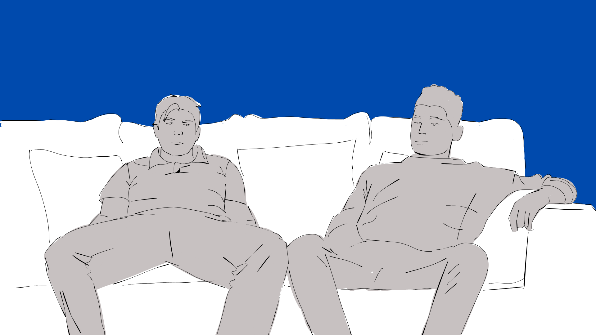
bob Spec Campaign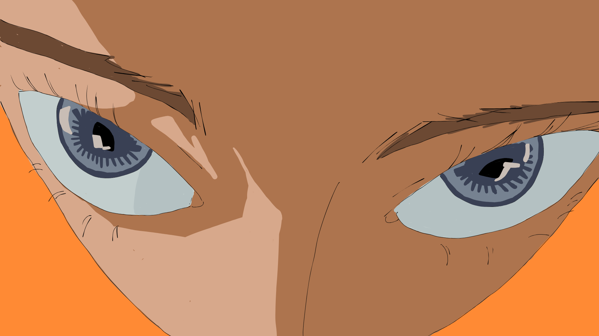
IRIS Spec Campaign
Ad Archive
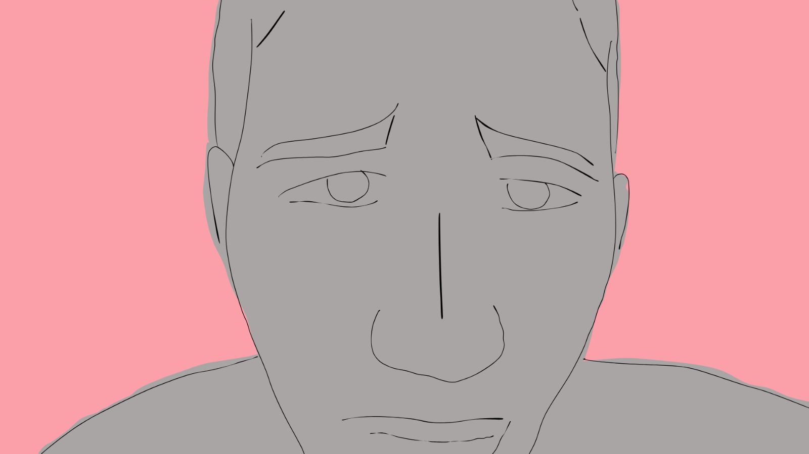
Kill the Trend
Peep Spec Campaign
Pair it with Denim

bob Spec Campaign
IRIS Spec Campaign
Kill the TrendDespite the profound cultural significance of eyes in the Indian context—from the protective and potent weight of "nazar" (the gaze) to the poetic reverence for "nayan"—eye makeup lacks a dedicated, elevated category. The beauty industry has built intricate routines for skin, hair, and lips, but eyes are rarely treated as an experimental or artistic canvas, often reduced to just standard mascara. Simultaneously, traditional beauty OOH advertising has become wallpaper, failing to capture the true power of the gaze.
Eyes do everything first, and culturally, they hold the most power. To launch Peep as a dedicated world for eye beauty, we need to elevate the eye from a basic makeup step to a bold, artistic canvas. By taking a traditional static beauty billboard and making a targeted, physical intervention—swapping out or painting over the eye section—the campaign activates the physical environment. It forces the commuter to look twice, reclaiming the cultural power of the gaze and proving the manifesto: Eyes first. Everything else can wait.
| Phase | The Barrier | The Comms Task | Core Channels |
|---|---|---|---|
| Living (Awareness) | Consumers view eye makeup as just basic mascara and tune out standard, passive beauty ads. | Disrupt the environment. Reclaim the power of the gaze by physically altering the eyes on an OOH board. | Modular OOH Billboards, Guerrilla Marketing |
| Looking (Consideration) | Consumers lack a dedicated brand world exclusively for experimental eye styling. | Establish the manifesto: Eyes deserved their own aisle. That world is Peep. | Social Media (Behind-the-scenes of the OOH swap), Instagram |
| Buying (Conversion) | Hesitation to step outside the comfort zone of standard, functional eye makeup. | Frame Peep as the tool to look "more like yourself, or not entirely like yourself, in the best way possible." | D2C E-commerce Website, Retargeting Ads |
A high volume of earned media and organic social shares capturing the physical billboard disruption, directly correlating to a targeted spike in branded search volume for the Peep launch.
.gif)
Traditional ethnic wear is frequently boxed into "occasion wear" or sold as rigid, complete sets. For a Gen Z audience that prioritizes fluid, everyday styling, these full traditional sets can feel disconnected from their actual daily uniform: denim. Furthermore, testing and shooting multiple hybrid styling concepts across different seasons traditionally requires a massive, expensive pre-production shoot.
Gen Z doesn't always wear ethnic clothes as a rigid set; they effortlessly pair modern heritage pieces with their existing wardrobe staples. To reflect this, the campaign title Pair it with Denim captures two distinct consumer behaviors: styling denim as part of a highly structured look, or simply throwing it on with whatever they are already wearing. By using a hybrid AI-to-human production pipeline, I rapidly prototyped diverse, seasonless moods (layering, high contrast, summer casual) without the overhead of a massive initial shoot.
| Phase | The Barrier | The Comms Task | Core Channels |
|---|---|---|---|
| Living (Awareness) | Ethnic wear often sits in the closet waiting for a specific cultural event or festival. | Normalize modern heritage. Show ethnic tops effortlessly paired with everyday denim. | Instagram Reels, TikTok, Influencer Styling |
| Looking (Consideration) | Unsure how to style ethnic pieces casually across different climates or moods. | Present diverse, seasonless styling (high contrast, layering, light summer casual) rather than rigid drops. | Brand Social Media, Website Lookbooks |
| Buying (Conversion) | Habitually buying full sets rather than mixing and matching individual pieces. | Frame the purchase around versatility with the direct CTA: Pair it with Denim. | In-Store Visual Merchandising, D2C App |
An increase in cross-category basket sizes—specifically the simultaneous purchase of ethnic tops and denim bottoms—and high retention on the short-form hybrid styling reels.
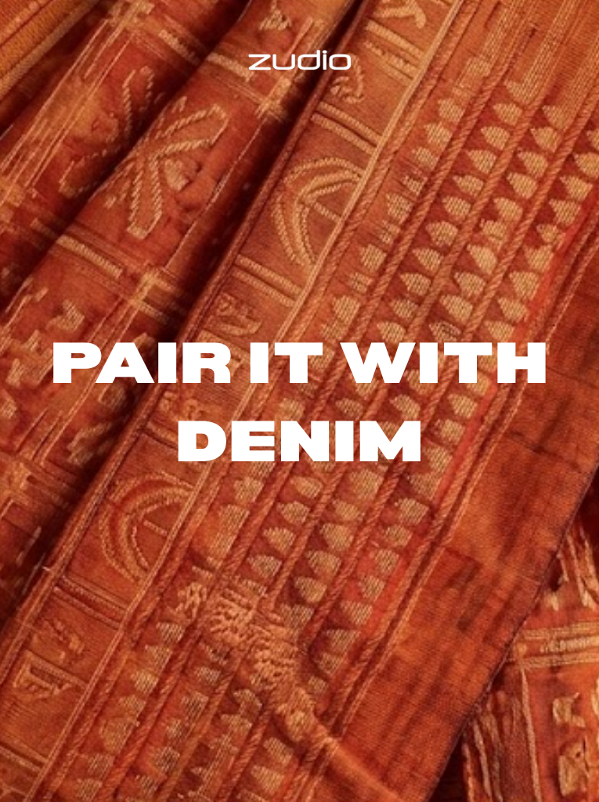
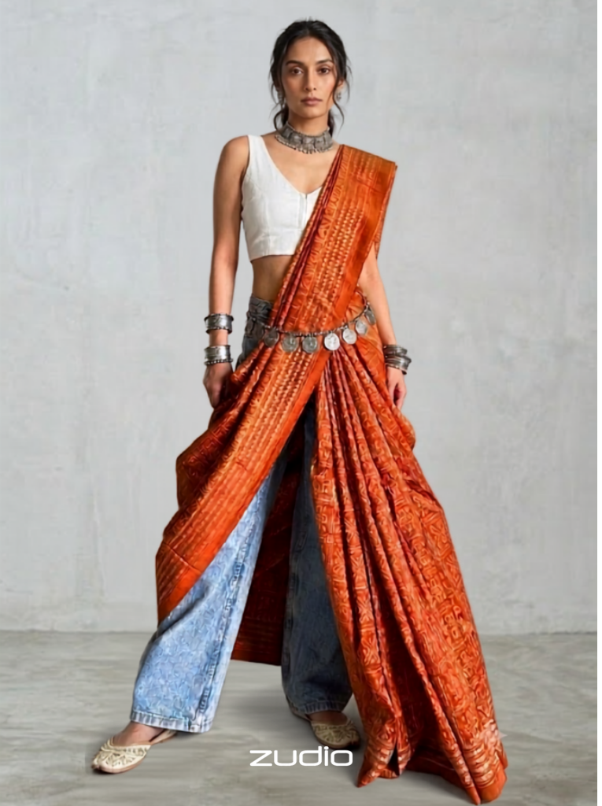
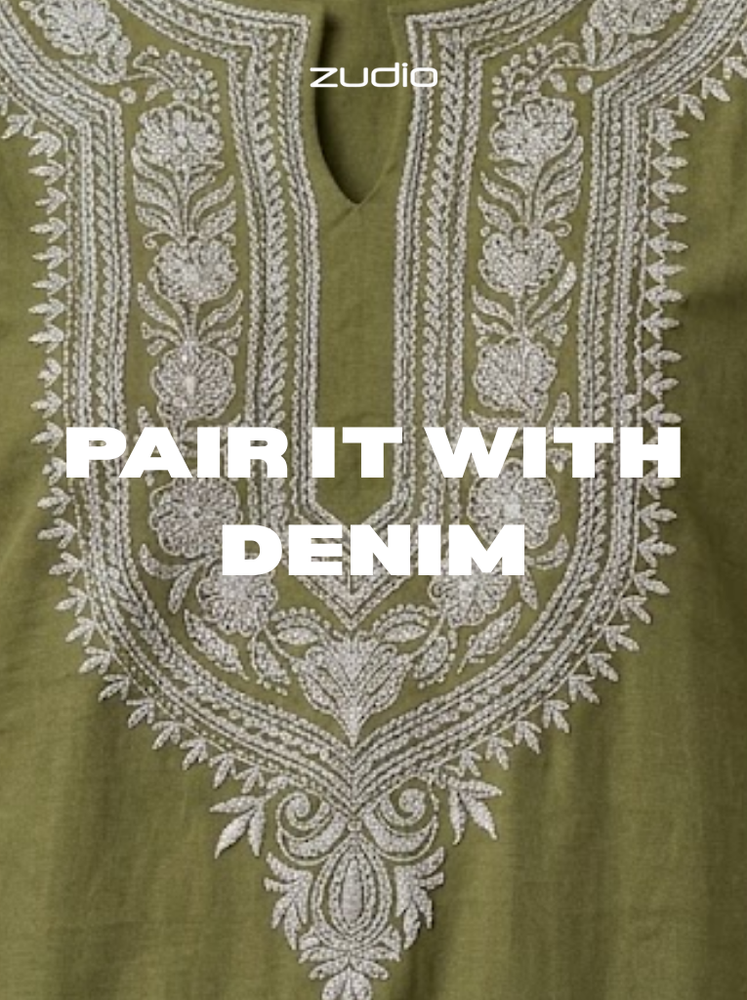
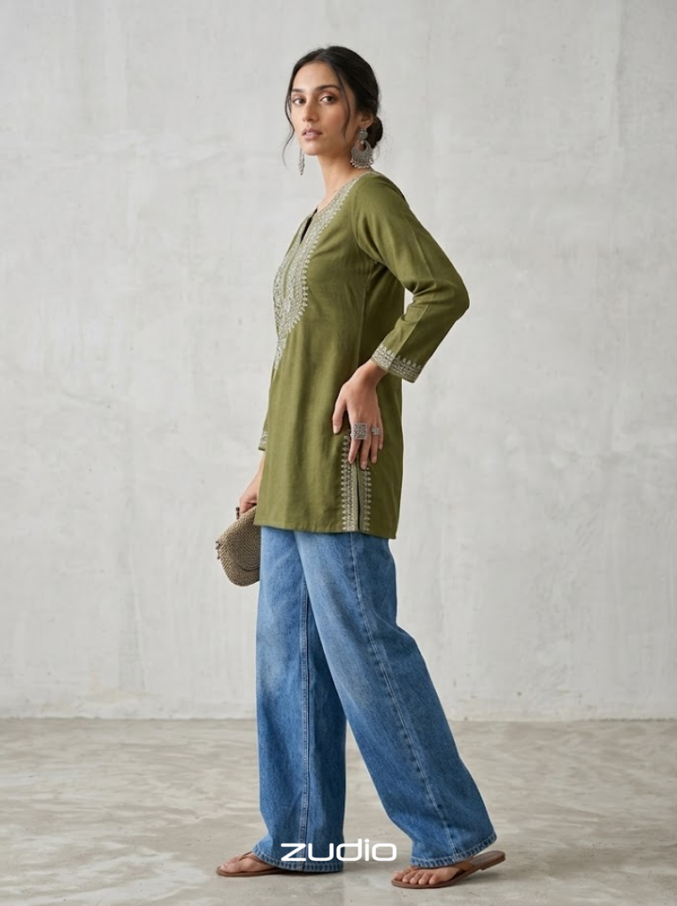
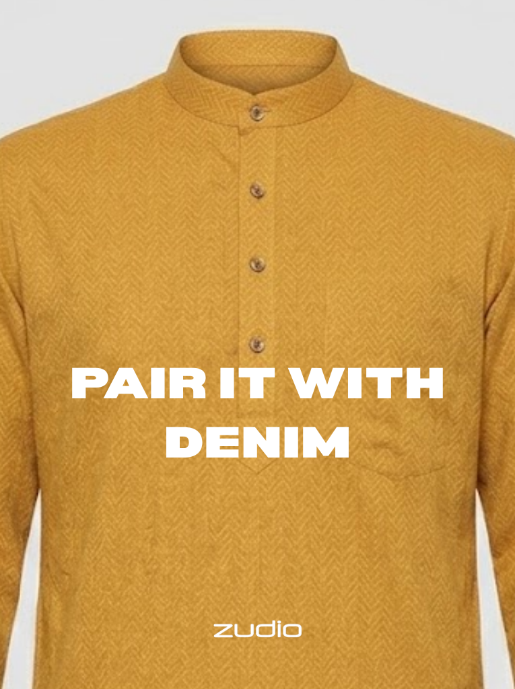
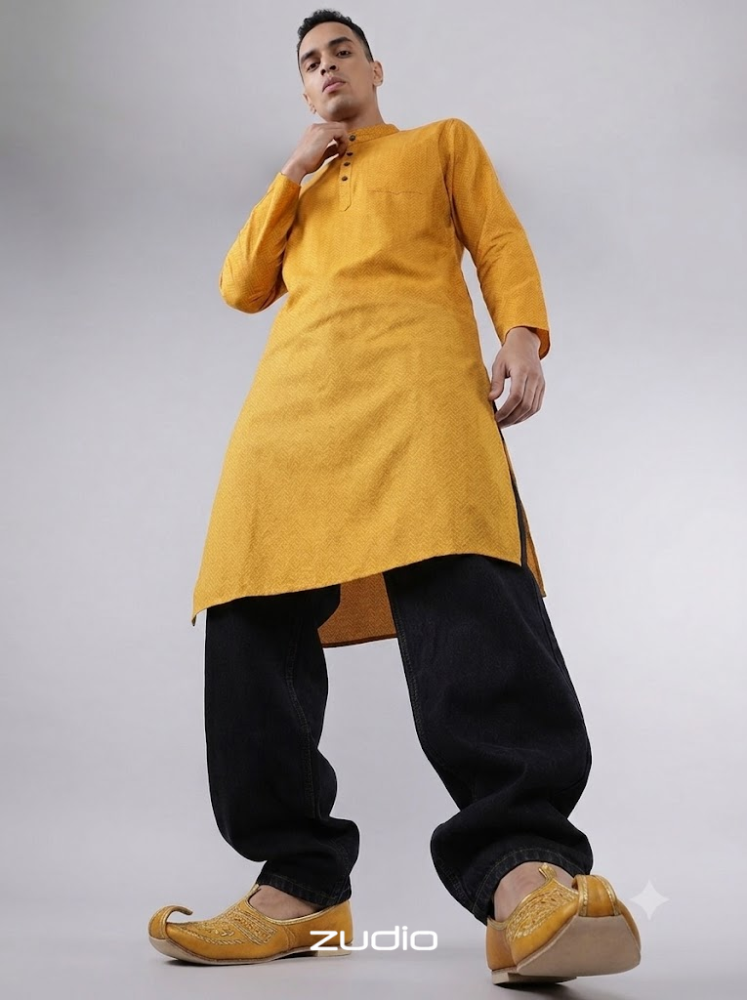
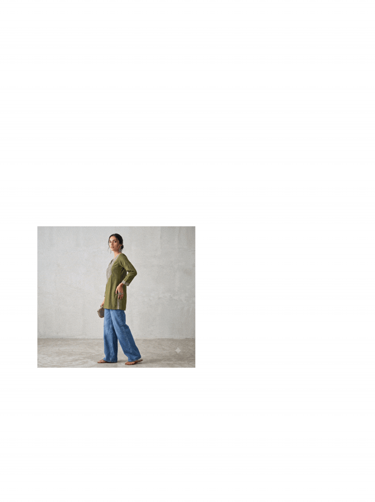
.gif)
Daily commuters are suffering from "booking fatigue." Finding a ride has devolved into a frustrating, anxiety-inducing ritual of constantly toggling between Ola, Uber, and Rapido to compare surge prices and wait times. The primary friction of the commute isn't the travel itself; it's the wasted time and mental energy of the pre-ride app juggle.
The most universal cultural truth of Indian commuting is the phrase, "Abhi tak book nahi hua?" (Has it not booked yet?). By highlighting the relatable tension of friends waiting on the couch while one person frantically switches between apps, bob positions itself as the ultimate tension-breaker. As an ONDC-backed smart mobility aggregator, bob isn't just another ride app—it is the frictionless, single-screen solution to the modern commuting headache.
| Phase | The Barrier | The Comms Task | Core Channels |
|---|---|---|---|
| Living (Awareness) | Users waste time and mental energy toggling between 3 different ride apps. | Mirror the universal frustration of making your friends wait while you compare prices. | Instagram Reels, YouTube Pre-Roll, Meme Pages |
| Looking (Consideration) | Users don't realize open mobility networks allow cross-platform booking. | Position bob as the ultimate smart aggregator that does the price/time comparison for you. | Social Media, App Store Optimization, Influencer Skits |
| Buying (Conversion) | Habituation to opening Uber/Ola first out of muscle memory. | Build a sticky new behavioral hook: "THAT'S WHY. JUST bob IT." | Performance Ads, Push Notifications, Search |
A reduction in the average user's time-to-book, driving high day-one app installs and displacing legacy ride-hailing apps as the default muscle-memory first open.
IRIS colored eye contacts are currently marketed on third-party retailers like Nykaa using identical, sterile macro product shots. This creates a critical barrier for a Gen Z audience: the lenses feel like a clinical medical device or a high-commitment functional purchase, rather than a fluid, everyday mood accessory.
Online culture doesn't reward hyper-polished perfection; it rewards meme-native novelty and deadpan humor. To shift colored contacts from a "clinical purchase" to a "daily fashion pick," IRIS must completely subvert the expected high-fashion close-ups. By leaning into the unsettling, hyper-candid "stares straight into your soul" aesthetic, IRIS can own a tone that feels natively Gen Z and visually dominate the crowded Nykaa interface.
| Phase | The Barrier | The Comms Task | Core Channels |
|---|---|---|---|
| Living (Awareness) | Lenses feel like a sterile, clinical device, not a fashion choice. | Establish IRIS lenses as a bold, everyday mood accessory. | Instagram Reels, TikTok, Meme Pages, Influencers |
| Looking (Consideration) | All lens ads look like overly polished, identical macro close-ups. | Subvert the expected with deadpan, meme-native "stares into your soul" visuals. | Brand Social Media, YouTube, Website |
| Buying (Conversion) | It feels like a high-commitment or purely functional purchase. | Frame picking an IRIS lens as being as easy as picking your daily outfit. | Nykaa App, Website UI, Retargeting Ads |
A measurable increase in direct add-to-carts originating from the disrupted UI, alongside a shift in social sentiment tagging the lenses as a daily OOTD accessory rather than a functional purchase.
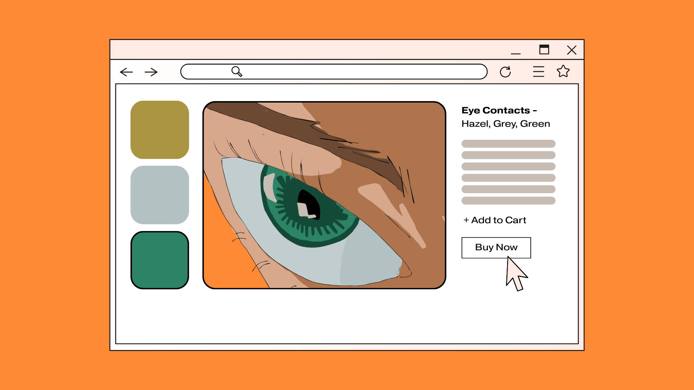
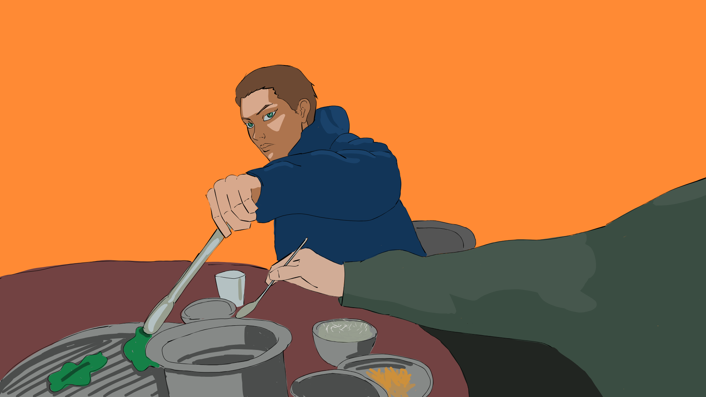
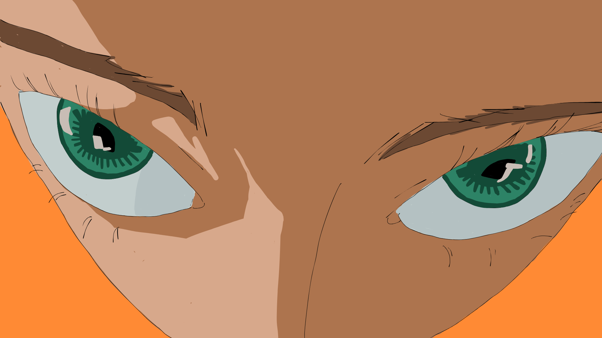
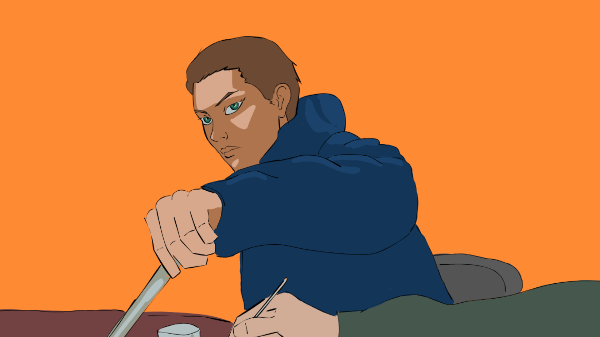
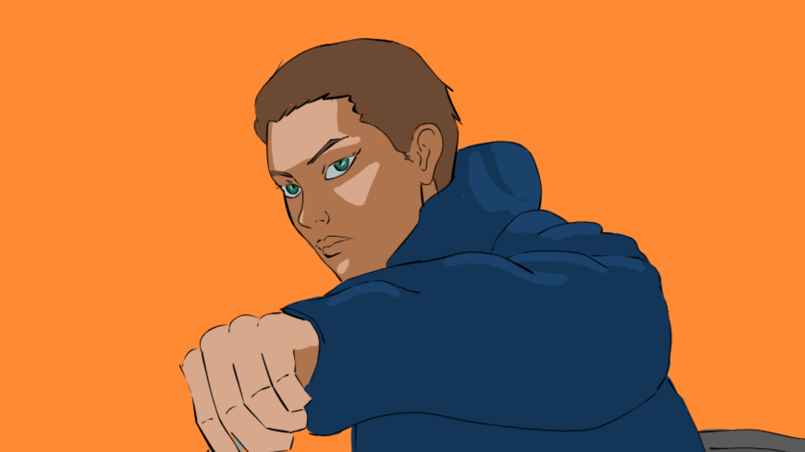
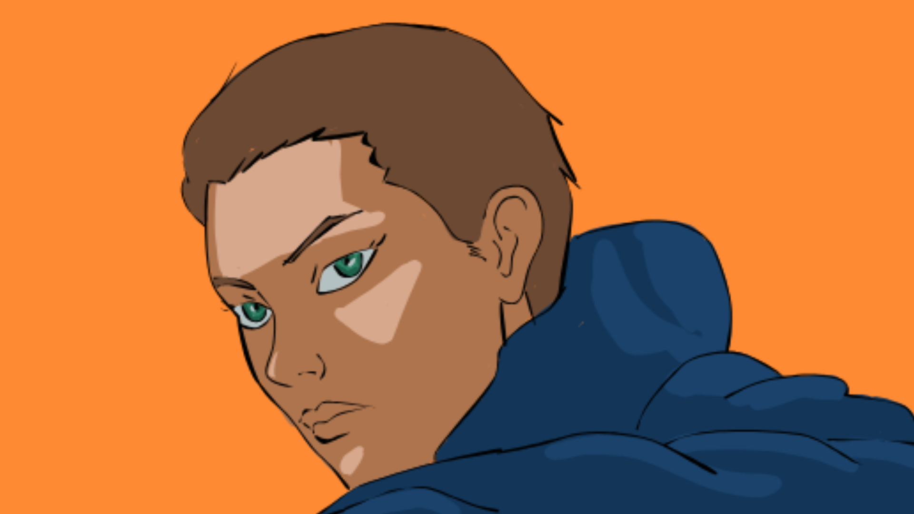

As someone who regularly pulls film stills to study composition and blocking for art references, I found myself asking a simple question: is anyone studying commercial advertising this way? Advertising moves so fast that brilliant visual choices are often treated as disposable content. I was curious if the structural logic, framing, and pacing of cinema were being applied to ads in the same deliberate way, so I started collecting them to find out.
What began as a purely personal interest—saving a cool frame here, a sharp line of dialogue there—naturally grew into a structured practice. I realized that by archiving commercial moments with the same reverence usually reserved for film cinematography, I could reverse-engineer the creative decisions behind them. It is a sandbox built entirely out of my own curiosity, turning passive scrolling into an active study of visual storytelling.
| Phase | The Motivation | The Archival Task | Core Focus |
|---|---|---|---|
| Observation | A natural habit of hunting for strong art references. | Isolate the specific visual frame, copy line, or pacing choice that caught my eye. | Still Shots, Dialogue Snippets, Pacing Hooks |
| Categorization | Managing an ever-growing folder of screenshots. | Organize the archive strictly by campaign type and specific creative device. | Taxonomy, Database Structuring, Visual Libraries |
| Synthesis | Answering the question: Why does this work? | Attach personal running notes on what each piece teaches and how the shot was constructed. | Visual Study, Copywriting Observation, Art Direction |
.png)
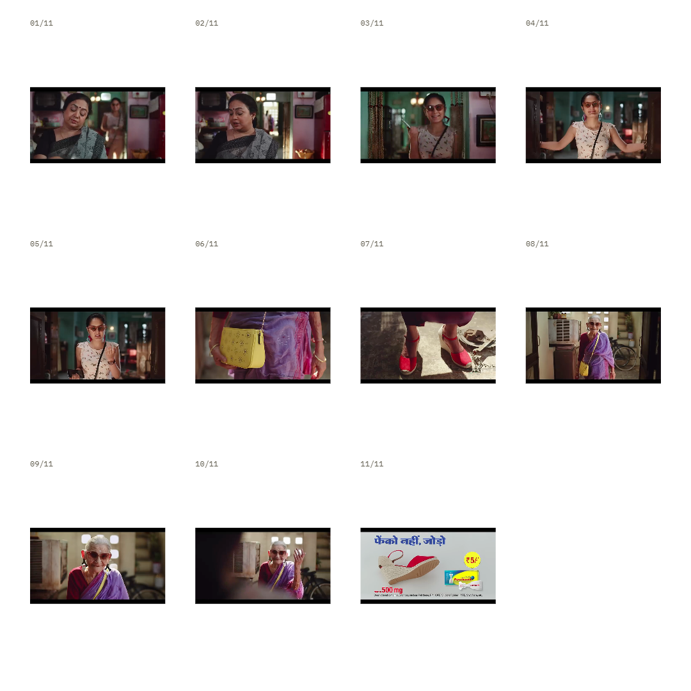
Every industry is being reinvented by AI, but fashion is still built on long design cycles, inventory bets, and yesterday's trends. For Gen Z, this mass-production pipeline results in hyper-conformity and the sociological dread of showing up in the exact same algorithm-fed outfit as everyone else.
A core strategic challenge for this stealth AI tech brand was a built-in product paradox: How do you market a startup that is built on rapidly hopping on trends, while hero-ing a feature called the "Kill-Switch" that ends them? If not positioned correctly, it feels completely counterintuitive.
I resolved the paradox by shifting from "trend-following" to "trend-ownership." The Kill-Switch doesn't kill fashion; it kills cloning. The AI catches the trend so you can wear it first, framing the brand as a living editorial drop system built for permanent, individual ownership.
| Phase | The Barrier | The Comms Task | Core Channels |
|---|---|---|---|
| Living (Awareness) | Fast fashion mass-produces micro-trends, leading to extreme identity fatigue. | Highlight the absurdity of hyper-conformity and the loss of individual style. | Official Meme Account, Subculture Reels, TikTok |
| Looking (Consideration) | A trend-based brand having a "Kill-Switch" feels counterintuitive. | Resolve the paradox: the switch doesn't kill the trend, it kills the cloning. You own it forever. | Instagram, Pre-Launch Website |
| Buying (Conversion) | Reflecting individual demand and avoiding mass restocks. | Shift to a reassuring tone of absolute individuality ("New Pinch? Always. Same Pinch? Never."). | D2C App Interface, Post-Launch Campaigns |
Rapid sell-out velocity upon drop release and a high conversion rate on the pre-launch waitlist, validating the consumer demand for extreme, permanent trend ownership.
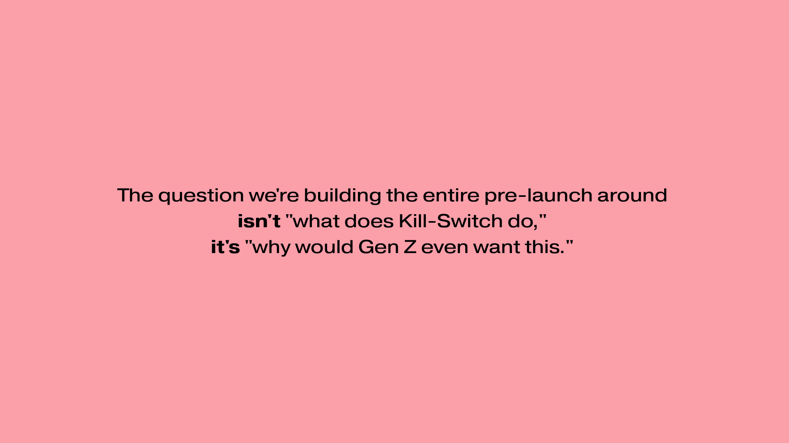
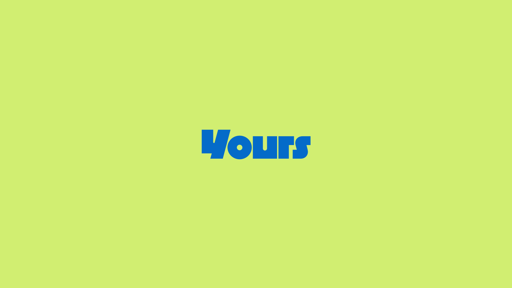
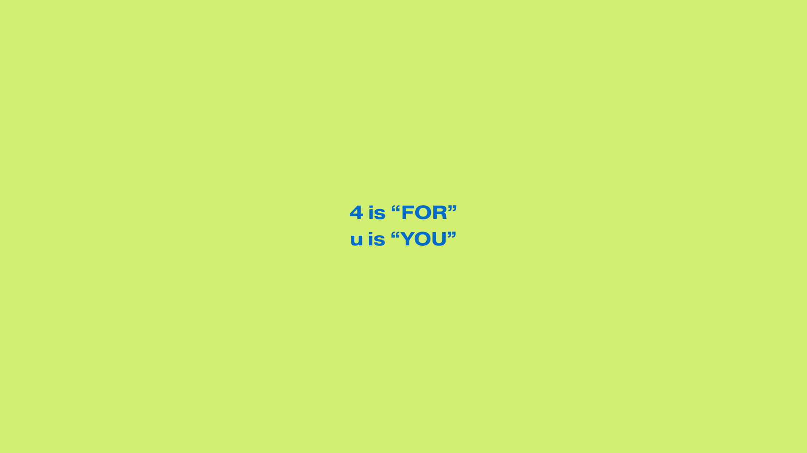
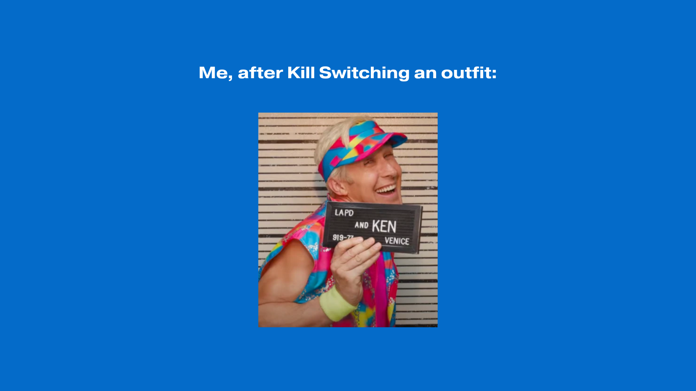
I sit at the intersection of internet culture, visual narrative, and physical space. I help brands translate environmental observations into polished, culturally resonant campaigns.
How I Build:
I use a sociological approach to map out cause-and-effect creative strategies, ensuring your brand hits the right public signals from pre-launch to post-launch.
I save pre-production budgets by building rigorous storyboards and scripts that lock in the vision, leaving zero ambiguity for your directors and editors.
I specialize in the unfiltered. I conceptualize candid, long-form brand content to capture a positioning most modern brands are missing, and systematically clip that down into native short-form skits and reels.